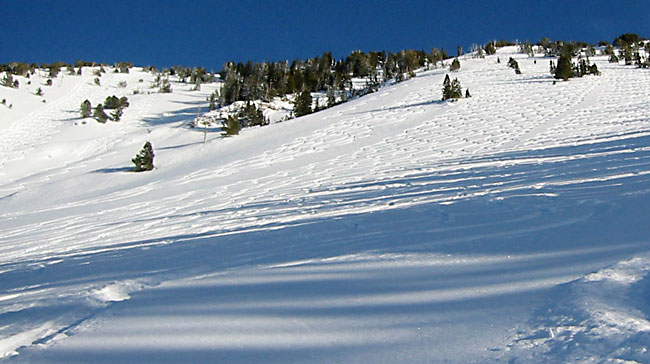
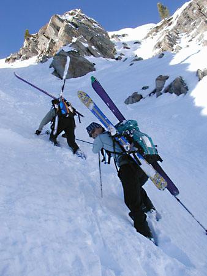
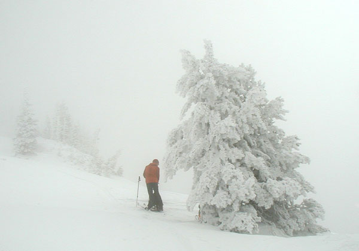

|
January 2
Gobblers Knob
The avy report says "storm totals from Tuesday night to 3 to 5’ in
the Cottonwoods", but there was little over a foot of new snow
from that period in the Porter Fork area. We skied up the bowman
fork
trail, took some runs in the cabin shot area, dug a snow pit on
belay, summited, and skied a long line down into gobblers through
challenging wind
drifts and powdery debris that had our quads screaming by the end.
We hit the car at dark, 6:00. ICCT: 2 hand hits
= shear 1 foot deep
December 27
Raymond Norte & Shorte
Well, a year ago helmut and I started off down this chute, but
turned back once helmut came upon a short cliff band. Today, the
powder
princess and I returned with rope and harness, to complete the
voyage. Unfortunately, for lack of
a doggie
specific
harness, Star Child had to stay at home. Since my picts turned
out so bad, I decided to give them that "yellowish,
crappy
old photo" look. Enjoy!

The chute is slightly left of center of this pict that I took a couple
weeks earlier from Main Porter. In the picture it goes straight
down from the center of east Raymond ridge.

Here's the powder princess at the bottom of the rappel. I would have
shown the picture of her rappelling over the lip, but that shot
makes the cliff look like it's only about a 10 foot drop, which
it probably
is...

This is looking back up after making a few turns down the apron.
It looks kinda small in this photo but it's really HUGE!
Norte & Shorte, or whatever it's called, makes
an exciting home run after sessioning Raymond's North Glades.
The upper half of the run offers some great turns with that "over
a cliff"
feel.
The
bottom
apron rolls
out pretty
quickly,
but it's fun to ski the north drainage, which roller coasters down
through wide fields of mysteriously short & stubby pines. The chute
fills
in by the end of the season, and is also down climbable
or
jumpable
for
those
inclined
to steep freakishness. My plan is to return in a few months once
it fills in and ski it top to bottom, with a stop in the middle
to pull the ring and runners I've left behind. If you beat me to
it,
they're
on
skiers left, help yourself.
December 26
Georges Bowl, again.
It was bitter cold and the snow was completely windblown, but at
least there was a nice, long approach.
December 25. Xmas, Ya know!
Toot's ta boots
I don't know who named this run, but I don't think they did a very
good job of it. Star Child and I were quite pleased to discover deep,
soft powder on our one and only Christmas day run.
December 24
Maybird Trees
Great skiing down in the trees, and we were in radio contact
with another friend as he summited the Pheiferhorn above us,
making
us quite jealous. We discovered a ramshackel shelter on the ridge
and helped ourselves to a Christmas Eve shot of the Crown Royal
that
was stashed there!
December 19
Days fork, Toledo bowl
Days Fork was shit, but from the top of Toledo Bowl to LCC road was
Da Shit! Phenonemal corn snow blanketed the south faces. With the
sun low, temps low, and the winds constant, the south side offered
firm, but carveable corn even for our home run at 3:45.
December 18
Gobblers Knob
Big tour day for Star Child as we climbed from Porter Fork to
the top of Gobblers. Almost every surface had slid, creating
a snowpack
that was about two feet shallower than when we were there two
weeks ago. The massive funneling of the debris convieniently
cleared
a swatch through the wiene wackers, giving the north face a least
200
vft more open skiing. The screaming professor tested out his
new rando gear and for the first time was able to keep up with
leaping
ScruffBucket.
On another note, SomeGuy had a party. There was
a brainstorming session in which a new tag line for the foothill
freak was born: www.foothillfreak.com:
It's Fer Reals, Brah. Also at the party the utah classic
bumpersticker "I love mormon pussy" mysterious appeared on
SomeGuys vehicle....
December 14
Georges Bowl
We dawn patrolled our way up to Georges to get a birds eye view
of the avalanche that fatally trapped two snowshoers in Mineral
Fork.
On our way up, we were blown away by the sight of a recent slide
that seemingly came out of nowhere, took out the approach trail
(cardiff fork road), hit the valley bottom and shot up the opposite
side
of the
drainage, knocking over most of an aspen glade on it's way. Definitely
a slide to ruin your day, and a reminder why the snowshoers,
most likely never stood a chance. The snow up on Georges
was very fun, carveable powder, The icy road out was a good reminder
of why I wear a helmut. The remains of several massive avalanches
were good reminders of why the dangers of this sport should not
be underestimated.
December 12
Alta Day
Big Daddy was in town so an Alta day was called for. By the
last run, He had charmed and amassed a large posse of hot,
shredding
telemarking babes. This meant that if Big Daddy fell into
a tree well, there
would be a crew of darling young women to pull him out. Therefore,
I took off to hit some steep lines...
December 11
Mill D, Reynolds north trees, Big
Water area
We had a Phat possee. With it being a high avy day, I opted
for the security of the Mill D area. We entertained ourselves
with
ultra
low angle snow and tight tree runs.
December 5
Main Porter Fork
Pretty much just went up Porter Fork to look across the range
and see our tracks on Gobblers from the day before. Every
work of beauty
deserves to be admired. (unfortunately, our turns did not
survive the next snowstorm. The weight of the new snow
took out the
layer upon which we skied. The marks of our passing ended
up in a large
debris pile, 1500 feet below where they were left....)

Can't say that I put all these tracks in, but I did put in the best
ones.
December 4
Gobblers Knob
3 sick 1100 vtf runs from the very top of gobblers in
perfect, perfect powder. What can I say? For reals, Brah!
November 26
Circle all wack off
Pleanty of gate bashing backcountry off circle all peak. I'd reccommend several
more feet of snow before returning here...
November 28
Alta Resort Day
My friends made me do it! Chocking on powder on the first run seemed worth the
price of admission. Mixed feelings about the new chair... November 27
Georges Bowl
Perfect choice for this day as the avy danger grew with every lap. Tons of
fun to be out during some major accumulation.
November 26
Leftover Turkey Day Tour
What could possibly be better than eating turkey after a full day
of skiing? Why, it's skiing the day after thanksgiving with a backpack
full of turkey leftovers!
To Share the love, we brought Star Child with us to one last tour at Deer Valet
before the resort opens next weekend. There was about 8 inches of new snow
on top
of
a mysterious and often crusty base that was constantly challenging your fore & aft
center of balance. Looked good, felt like shit. I always think of Deer Valley
as a warm haven, but suprisingly cold temps kept us moving. The stellar
leftovers had to wait for the drive home...
November 25
Turkey Day Tour
Sure, the Thanksgiving day feast was going to be at the freak Bachealor Pad,
but that's no reason to stay home cooking all day. We simply divied out cooking
responsibilities and found someone to watch the turkey for us. When it comes
to skiing, at times you must delegate! Despite rather low moral and less than
inspiring conditions, we managed to put in a couple laps in Maybird, and make
it back to the pad in time to eat ourselves into a coma.
November 20
Days Fork Snowboarding
Lucky for us, there were still some untracked lines in Days fork. It's been almost
three weeks since significant precipitation, yet we found some absolutely scrumptous
powder. Even more proof that ski resorts should just be avoided entirely.... November
9
Cloud Chasing on Mt. Wire
5 AM I got the call. Powder Princess was blowing chunks to the proceline throne.
Without a backup buddy to ski with I decided to go back to sleep. But my thighs
kept me awake. They wanted to climb. They didn't care if it was dark and rainy
out. They wanted to pound out some vert. So my legs dragged me out of bed and
up to Red Butte, where they took me up my favorite trail that goes straight from
the car to the top of Mt. Wire. The smell of wet sage was a welcome scent, overpowering
the stale wafts of smog and ozone. Climbing the cold, wet rungs of the radio
tower to the top provided a 360 view of nothing but fog. Rain chased me back
down to the valley.
November
7
Sniffer Ski At Deer Valley, Empire Area
Suprisingly, we weren't the only totally desparate skiers out there who had decided
to brave the early summer like heat. Star Child was thrilled to finally get in
some quality powder porpoiseing. Deer Valley is an excellent spot for early season
sniffer-skiing as dogs are welcome and some steep, N facing lines are right in
front of the parking lot. Watch out for brown snow and bring some sun screen.

Twig-a-lishous and Powder Princess looking for some
boys to intimidate in Wolverine Cirque.
November 6
Chute schopping: Wolverine cirque and Tuscarora
We hiked up Grizzely Gulch, following the ridge along Patsy Marley, The Cirque,
up to Wolverine peak, with our heads glued to our left shoulders, looking for
the perfect chute. The Sickel seemed long and tasty so we hit that for starters.
After another line in the cirque, we worked our way over towards Tuscarora were
we skied a north facing chute, then crossed over a notch onto the east face,
which was sun crusted to perfection. We finished with a setting sun home run
from 10,595 (Point Supreme?).

Foothill shreds Baldy Main Chute, Helmutt practices good skiing safety
above.
November 4
Baldy Main Chute
Deciding to ski main chute was easy as looking down
little chute was a real sphincter tightner. The low snowpack accentuated
the teeth of this run, and the crux was narrow and long enough
to ensure more side slipping than I care to practice before breakfast.
Main Chute was soft and powdery, allowing smooth,
round turns. Tombstone at the bottom was as good as ever. The real
danger of the day was when we
tucked the semi-groomed run back to base. I forgot to pre-jump
a big rollover near the new mid-station and caught more air
than recommended when going 30mph+ over a still frozen, hacked groom
job
on ultra-light
rando gear.
It wasn't a total
yardsale. After I had finally come to a stop, one ski had
somehow managed to stay on. I had skidded so hard that when I
stood up
my pants
had
been twisted
around
backwards! I was still laughing about it when I made it to work an
hour later.
Baldy Chutes are always an excellent choice for
an early morning flushing.
November 2
Scott's Bowl
If you're ever thinking of skiing Scott's bowl this early in the season, I've
got a bit of advice for you: DON'T GO! If you do go, I've got some more advice:
you're probably bigger, stronger,
and
smarter than those sticks at the bottom of the run so lean back, keep your tips
up,
and
for
god's
sake,
don't have any crash landings on punjabis. Beautiful place to watch the sunrise
and to contemplate wether the noise that radiates from Little Cottonwood Canyon
comes from wind, water, or traffic.
October 31
Fred's Trees, Alta
Snow as good as any of the best days of January. Being the first
to ski under the still unfinished new chairlift without a single
track to be seen in any direction is quite exhillaring. Face shots
and that freezing neck sensation
for those of us who forgot to bring mufflers was the rule. Snow
base totals at Collins
Gultch reached
80 inches. I repeat, 80 inches of base in October!!!!

Someguy before being attacked by an angry rhyming tree.
October 30
Michigan City, Honeycomb Chutes, Solitude, Twin Lakes, Lower Patsy
Marley
Felt good to crank some mileage on this second weekend of the season.
While skiing the empty runs of Solitude we could look over to see
the crowds of Brighton, the first resort to open this season. (Opened
October 26th).
October 26
South face of West Bowl of Silverfork
Had to go back for more trailbreaking on this south face. New wind events had
reshaped the terrain into ribs and fins, and turned the light powder into stiffly
whipped cream.
October 24
South face of West Bowl of Silverfork
"Why not break trail straight up to Jaws rather than go up Flagstaff and
traverse over", we asked.
"Because it takes over 2 hours when the breaking is deep", was the
mountain's reply.
Suprisingly deep, light snow and a cloudy history of no sun exposure made the
south flanks an actual ski destination. We aborted plans to ski the north facing
slopes to enjoy the longer, steeper lines in exceptionally good form. October 23
Days Fork
Winter arrived early. Fluffy yet firm powder
up to 3.5 ft in depth was enough to forefit the need for rock skis
or snowboards. Cornice dropping was fun until
Helmutt heard his knee go "pop" when he fell into a crack behind a
partially dropped block. Warmish temps combined with falling snow had people
loosing their skins right and left. Unless, or course, they were using BD asencions. Not
bad for an early season shake down.
|